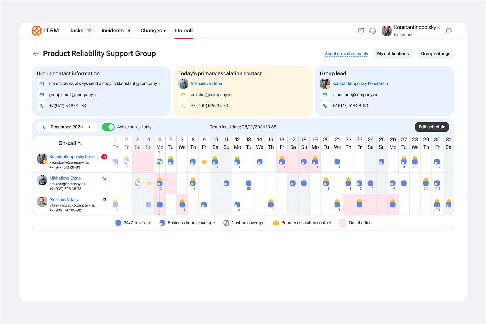
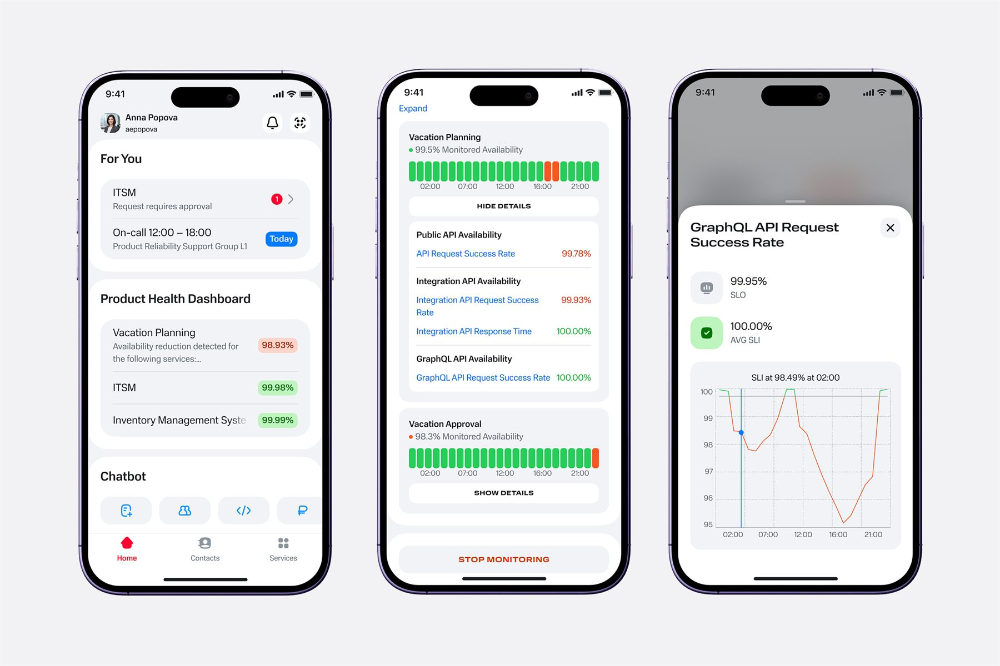

Ekaterina Sharipova
Product designerI enjoy working from the problem up, exploring opportunities, shaping product concepts and designing experiences before the solution is fully defined.

Simplifying On-call Planning in an ITSM System
Research showed that teams were already comfortable with their familiar planning model. Instead of replacing it with a new pattern, I explored what actually needed to change and simplified the experience around it.

Launching a New Service in an Employee App
I shaped a focused mobile experience for monitoring critical services during incidents — deciding what the mobile scenario needed to do rather than simply bringing the desktop experience to a smaller screen.
About
Over the past 4+ years, I’ve worked on B2E SaaS and internal products, mostly around complex operational workflows. These projects taught me how to work with real constraints, understand different user needs, and turn complex problems into clear experiences.
What I enjoy most is working before the solution is obvious — understanding the problem, exploring opportunities, and shaping a clear product concept from an open-ended idea.
That’s the kind of work I want to do more of next, combining product thinking with hands-on design from the early stages through to the final interface.
I also enjoy mentoring. I currently mentor a junior designer, helping her navigate practical design challenges, edge cases, and scalability. She’s also taught me to look more critically at visual details and polish — something I’ve come to value more in my own work.
Outside of design, I love travelling — I’d rather see how people live and get out into nature than lie on a beach. My latest trip was to Kamchatka: volcanoes, rafting, and a boat out into the open ocean.